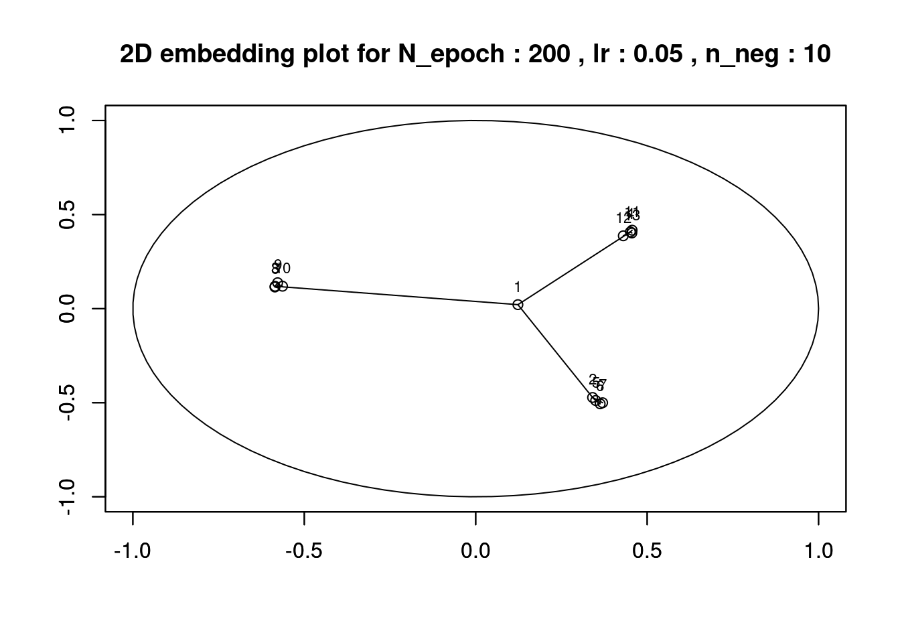

Chapter 4 Sensitivity Analysis and Shapley Values
Global sensitivity analysis measures the importance of input variables to a function. This is an important task in quantifying the uncertainty in which target variables can be predicted from their inputs. Sobol indices (Saltelli and Sobol’ 1995) are a popular approach to this. It turns out that there’s a relationship between Sobol indices and Shapley values. We explore this relationship here and demonstrate their effectiveness on some linear and non-linear models.
4.1 Relationship between Sobol indices and Shapley values
Shapley values are based on \(f(x)-E[f(x)]\) while Sobol indices decompose output variance into fractions contributed by the inputs. The Sobol index is a global measure of feature importance while Shapley values focus on local explanations although we could combine local Shapley values to achieve a global importance measure. Sobol indices are based on expectations and can be used for features not included in the model / function of interest. In this way we could query for important features correlated with those that the model does use.
4.2 CRAN sensitivity package
library(ggplot2)
library(pander)
if(!require(sensitivity)){
install.packages("sensitivity")
library(sensitivity)
}Standardized Regression Coefficients (SRC), or the Standardized Rank Regression Coefficients (SRRC), which are sensitivity indices based on linear or monotonic assumptions in the case of independent factors.
n <- 100
X <- data.frame(X1 = runif(n, 0.5, 1.5),
X2 = runif(n, 1.5, 4.5),
X3 = runif(n, 4.5, 13.5))
# linear model : Y = X1 + X2 + X3
y <- with(X, X1 + X2 + X3)
Z <- src(X, y, rank = FALSE, logistic = FALSE, nboot = 0, conf = 0.95)
pander(Z$SRC,caption = "Standardized Regression Coefficients ")| original | |
|---|---|
| X1 | 0.1168 |
| X2 | 0.3041 |
| X3 | 0.9458 |

y <- with(X, X1 + X2 + X3)
y <- y + rnorm(nrow(X),0,1/2)
df<- data.frame(cbind(X,y))
Z <- src(X, y, rank = FALSE, logistic = FALSE, nboot = 0, conf = 0.95)
pander(Z$SRC,caption = "Standardized Regression Coefficients ")| original | |
|---|---|
| X1 | 0.1392 |
| X2 | 0.2987 |
| X3 | 0.9278 |

We see how the importance of X3 is ranked above X2 and likewise X2 is more important than X1. This is by design of the simulated data set. The standardized regression coefficients (beta coefficients) are calculated from that has been standardized, let’s normalize and calculate the regression to see if indeed that is the case.
dfs<- data.frame(scale(df,center = TRUE,scale = TRUE))
lm.fit = lm(y ~ X1+X2+X3,data = dfs)
summary(lm.fit)##
## Call:
## lm(formula = y ~ X1 + X2 + X3, data = dfs)
##
## Residuals:
## Min 1Q Median 3Q Max
## -0.46316 -0.13824 0.01027 0.11493 0.63323
##
## Coefficients:
## Estimate Std. Error t value Pr(>|t|)
## (Intercept) 1.947e-16 1.838e-02 0.000 1
## X1 1.392e-01 1.849e-02 7.529 2.78e-11 ***
## X2 2.987e-01 1.848e-02 16.165 < 2e-16 ***
## X3 9.278e-01 1.849e-02 50.185 < 2e-16 ***
## ---
## Signif. codes: 0 '***' 0.001 '**' 0.01 '*' 0.05 '.' 0.1 ' ' 1
##
## Residual standard error: 0.1838 on 96 degrees of freedom
## Multiple R-squared: 0.9672, Adjusted R-squared: 0.9662
## F-statistic: 944.3 on 3 and 96 DF, p-value: < 2.2e-16We see that the values are very close.
4.3 Partial Correlation Coefficients
##
## Call:
## pcc(X = X, y = y, nboot = 100)
##
## Partial Correlation Coefficients (PCC):
## original bias std. error min. c.i. max. c.i.
## X1 0.6093124 -0.0026167144 0.058881992 0.5128295 0.7343511
## X2 0.8551735 -0.0008457680 0.024660556 0.8075219 0.9247324
## X3 0.9814697 -0.0003370708 0.003139543 0.9761082 0.98895304.4 Sobol indices for deterministic function and for model
y.fun <- function(X) {
X1<- X[,1]
X2<- X[,2]
X3<- X[,3]
X1+X2+X3
}
yhat.fun<-function(X,lm)
{
X1<- X[,1]
X2<- X[,2]
X3<- X[,3]
yhat <- predict(lm.fit,data.frame(X1=X1,X2=X2,X3=X3))
return(yhat)
}
nboot = 100
x <- sobol(model = y.fun, X[1:50,], X[51:100,], order = 2, nboot = nboot)
S.sobol <- x$S
pander(S.sobol)| original | bias | std. error | min. c.i. | max. c.i. | |
|---|---|---|---|---|---|
| X1 | 1.01 | -0.1477 | 0.9304 | -0.8589 | 2.904 |
| X2 | 0.8235 | -0.1814 | 0.8782 | -0.7671 | 2.679 |
| X3 | 1.858 | -0.004589 | 0.3697 | 0.9873 | 2.534 |
| **X1*X2** | -1.11 | 0.1768 | 0.9697 | -3.106 | 0.6967 |
| **X1*X3** | -1.11 | 0.1768 | 0.9697 | -3.106 | 0.6967 |
| **X2*X3** | -1.11 | 0.1768 | 0.9697 | -3.106 | 0.6967 |
#yhat.fun(data.frame(X1=1,X2=2,X3=3),lm.fit)
x <- sobol(model = yhat.fun,X[1:50,], X[51:100,], order = 2, nboot = nboot)
S.sobol <- x$S
pander(S.sobol)| original | bias | std. error | min. c.i. | max. c.i. | |
|---|---|---|---|---|---|
| X1 | 0.5955 | 0.08302 | 0.6269 | -0.7529 | 1.69 |
| X2 | 0.5193 | 0.08101 | 0.6373 | -0.8004 | 1.678 |
| X3 | 1.397 | 0.02192 | 0.1019 | 1.123 | 1.549 |
| **X1*X2** | -0.6087 | -0.08696 | 0.6316 | -1.714 | 0.7485 |
| **X1*X3** | -0.6087 | -0.08696 | 0.6316 | -1.714 | 0.7485 |
| **X2*X3** | -0.6087 | -0.08696 | 0.6316 | -1.714 | 0.7485 |
References
Saltelli, Andrea, and I. M. Sobol’. 1995. “Sensitivity Analysis for Nonlinear Mathematical Models: Numerical Experience.” Matematicheskoe Modelirovanie 7 (January).